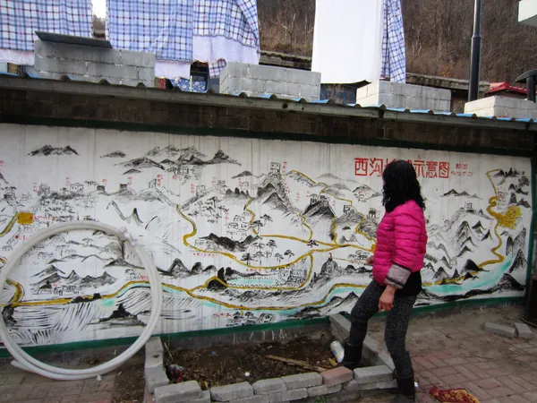
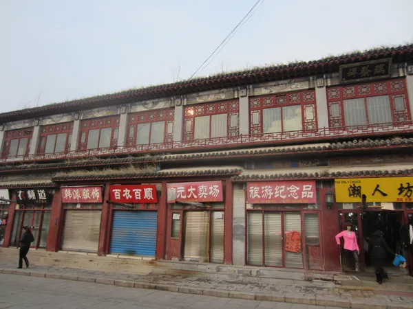

Shenyang
Imperial City
Beatiful Ancient Capital
{kind=link}
Jin and Qing Dynasties
Continued →

Better than Badaling
Getting there was a little tricky
The train was built for people shorter than me. Each side had a bench seat that faced the opposite seat. I sat with my knees invading the space of the passenger across from me. We rode cramped and uncomfortable for about three hours from Changchun through rural northeast China.
I got off the train exactly where I was supposed to. It was a reputable brand of map, purchased in Beijing. I was the only one who got off at this stop. There was nothing around. This felt right because I was trying to find an unpopular but historically significant section of the Great Wall and nothing should be there.
A group of taxi drivers were hanging around smoking cigarettes. They didn’t approach me. I asked them, in Mandarin, where I could find Zhuizi Shan (Awl Mountain). They all stood silent shaking their heads. For twenty minutes I pointed at the map trying to explain. They had a meeting. Huddled in a circle, one would look up on occasion and give me a glance. Meeting finished, they all nodded in agreement. I felt relief as one taxi driver opened his door for me and we set off.
We drove for about fifteen minutes. He dropped me off out near a barren corn field. I hiked up onto a hill and could see about ten houses to my right and a small village to the left. I camped for the night. A walk, a bus, a sporting goods store, and a four hour wait on a corner later the real journey began.
A little red car stopped and a friendly woman offered me a ride. She pulled over and threw my pack into the trunk. She nodded as I explained where I was going. “Thirty minutes,” she said. She knew where we were going. Again, I felt relief, but this time it was more powerful.
Half an hour later, after watching her call everyone she knew, I realized we were just driving. I like the momentum, but I had no idea what exactly was going on. My heart sank. I needed to abort this adventure and regroup. “I got it!” She put down her phone and had a big smile. “Two hours.” Two hours, okay… “Are you sure you don’t mind driving that far?” “We go.” She was happy, so I was happy.
Three hours passed. We are now in a tiny red car, looking straight up at the sky. The dirt switchback road was barely visible below the hood ornament. The engine revved, then the sound of the flat rocks slipping under the tires. The smell of burning clutch filled the air. She worked the clutch like a rally racer. Up one car length and then a slide back half the distance gained. My hand gripped the door handle, ready to bail. There was no way we could turn and go back down, gravity would take us down the fast way. Beads of sweat glistened on her forehead. I asked if I could drive. She got mad. I took a deep breath. She held hers. Up and slide, up and slide… The rhythm worked as she danced that car up the mountain and I’ll be damned if we didn’t make it.
The crest of the mountain was actually the base of another mountain. And there it was, fallen but not forgotten. A wall that was more like a mound of rubble. Stonework from people who had never heard of the Ming. The oldest section. This poor lady and her pretty red car just went through hell. She popped the trunk and I got my pack. We had earlier agreed on a price of thirty yuan, about five bucks. I gave her three hundred yuan instead and she accepted. Unfortunately, that is not enough to cover the tires and the clutch replacement. I hope she enjoys telling the story as much as I do.
Happy to have my feet on solid ground, I walked up the wall not wanting to see what happened next. She sat there for about three minutes. A motorcycle came from the opposite direction. They talked for a few minutes and she drove in the direction he came from. I was relieved, she had guidance from a local.
I looked for a spot to set up camp for the night. A no camping sign appeared, as if it knew I was coming. Damn. Now what? There are no Intercontinental hotels out here. Not knowing what to do other than try to find a hidden place, I walked down to the road. The same direction she went. I shook my head the whole way as I walked down the other side. This road was paved. Gently sweeping grade, a kid could skateboard down it with no problem. It led to a village. The people were so delightful and welcoming. I was able to rent a room in the village chief’s outbuilding. For six days, I hiked and explored this wonderful section of history. When you decide to go, be aware that cartographers in Beijing aren’t too particular on where they put dots.
Update: There is now a very good route posted online on how to get to Zhuizi Shan, a journey worth taking.

ENTER YOUR OPENING HOOK / INTRO PARAGRAPH HERE
ENTER A SECOND PARAGRAPH HERE IF YOU WANT ONE
PASTE YOUR ARTICLE TEXT HERE
{kind=link}
{kind=link}
{kind=link}
{kind=link}
{kind=link}